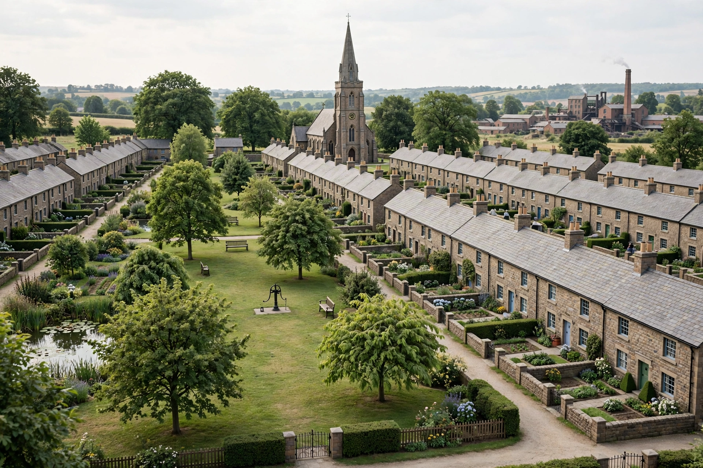

Model village
A model village is a type of mostly self-contained community, built from the late 18th century onwards by landowners and industrialists to house their workers. Model villages are planned settlements, often architecturally distinguished, with housing of a higher standard than was typical for the working class at the time, together with schools, churches, shops and recreational facilities provided by the founder. The term is distinct from the "model village" used for miniature village tourist attractions.

History
Early examples were built by enlightened landowners on their estates, but the great period of model village building came with the Industrial Revolution, when factory owners sought to attract and retain labour and to improve the health and morals of their workforce. New Lanark in Scotland, developed by Robert Owen from 1800, became internationally famous. Later Victorian examples include Saltaire (built by Titus Salt from 1851), Akroydon, and the soap manufacturers' villages of Port Sunlight (Lever Brothers, from 1888) and Bournville (Cadbury, from 1893). In the United States, the company town of Pullman, Illinois, was an influential though ultimately controversial example.
Motives and criticism
Founders' motives combined genuine philanthropy and social reform with paternalism and self-interest: healthier, sober and loyal workers were more productive, and many villages banned public houses or imposed rules on tenants' behaviour. Model villages influenced the later garden city movement of Ebenezer Howard and the development of town planning and social housing in the 20th century.